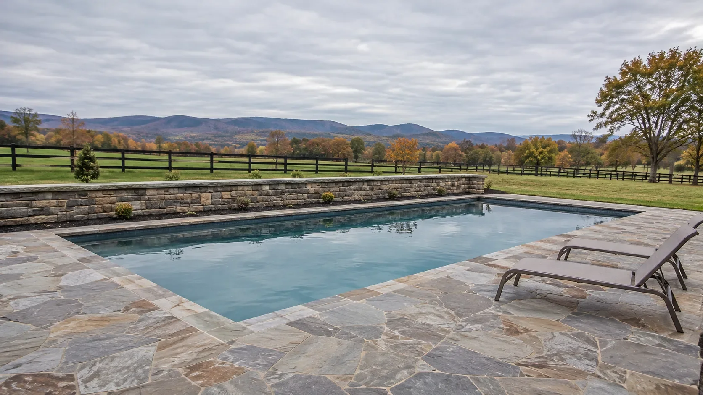
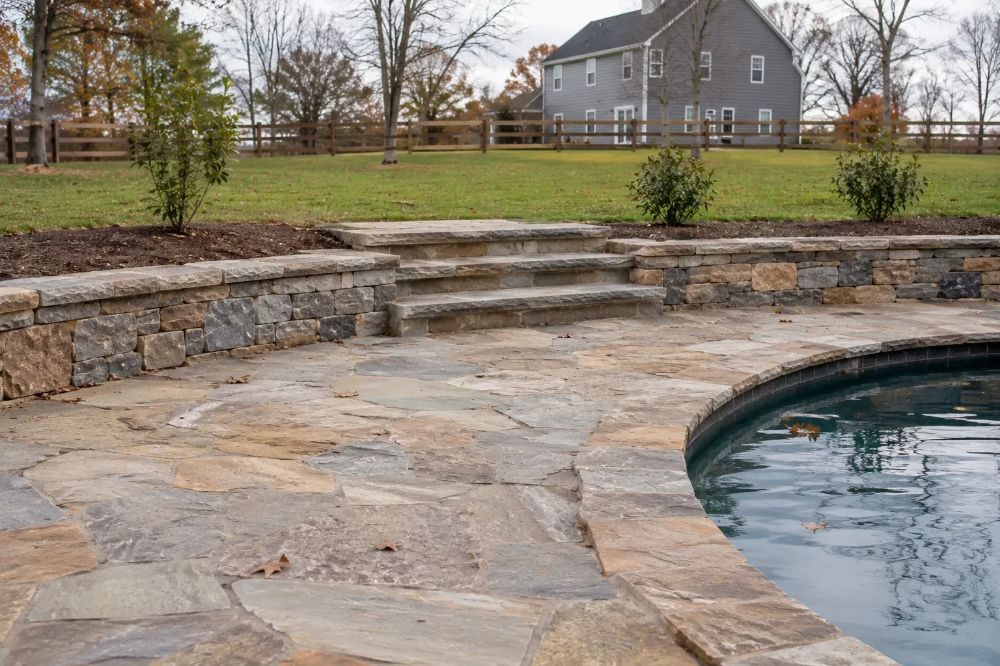
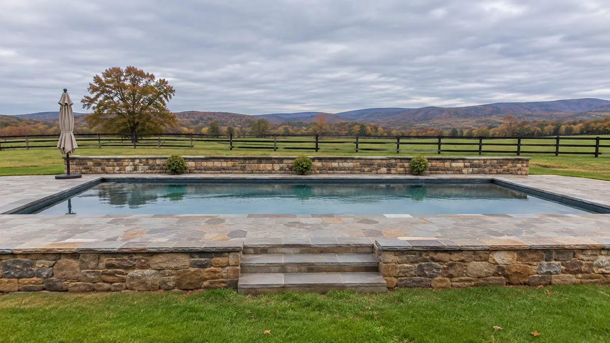
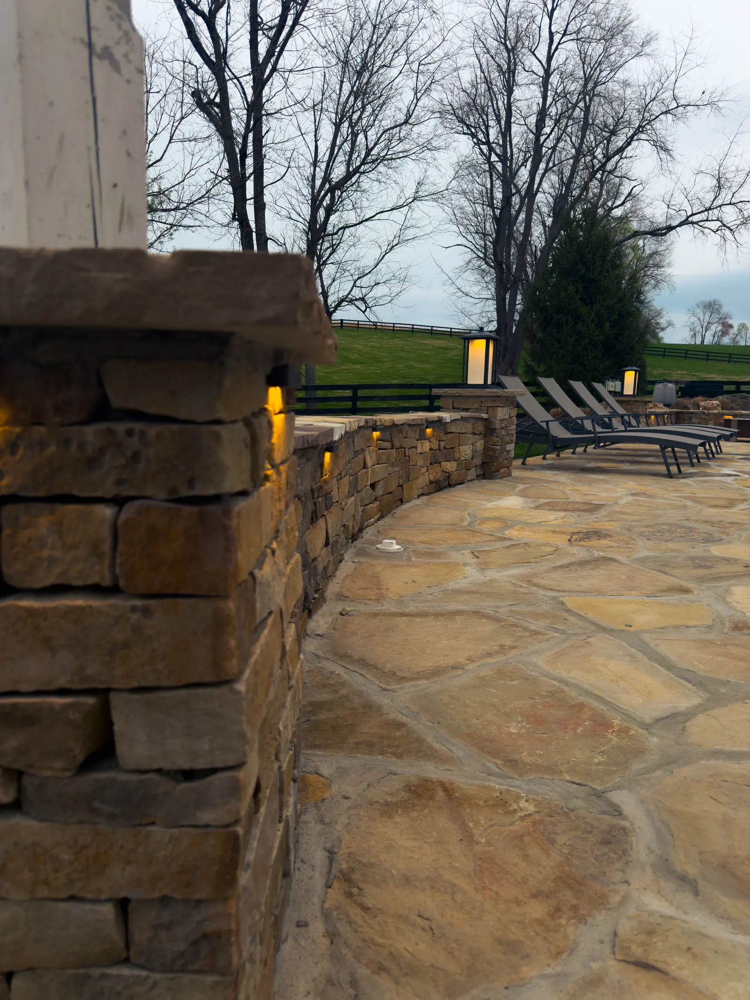
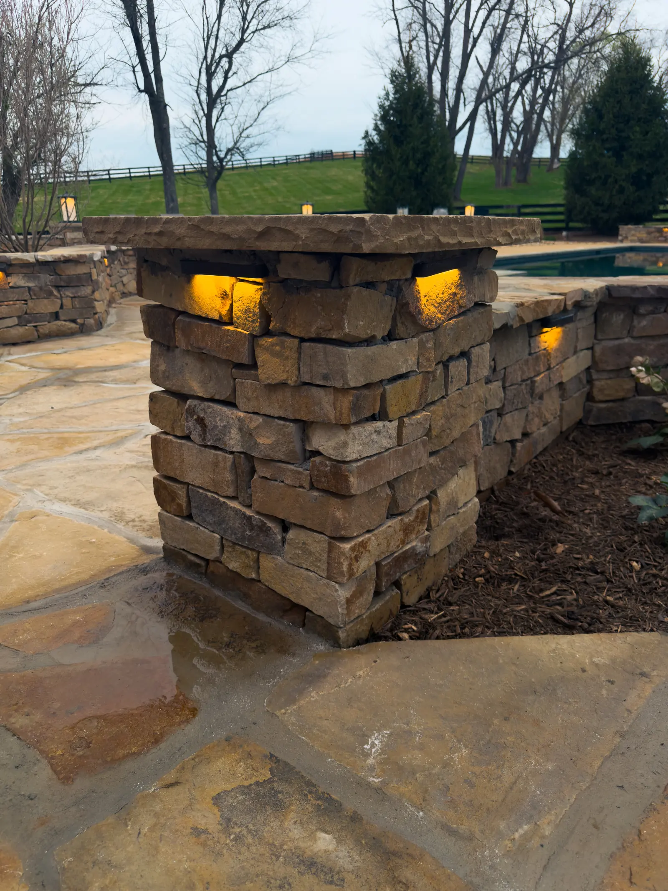
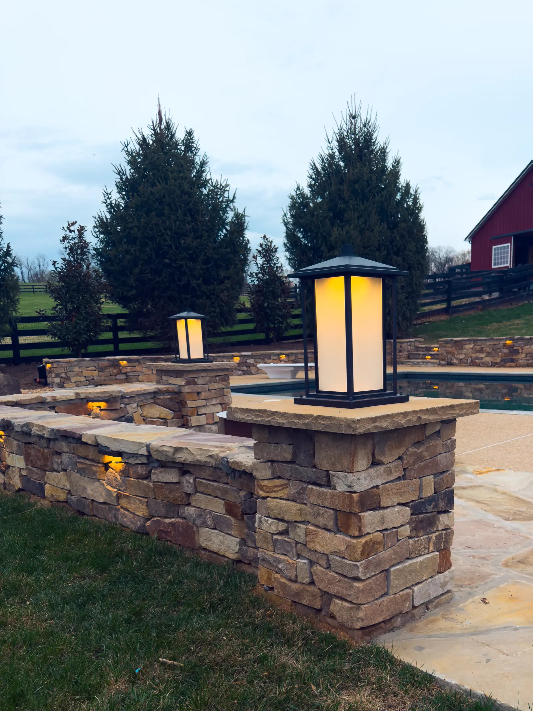
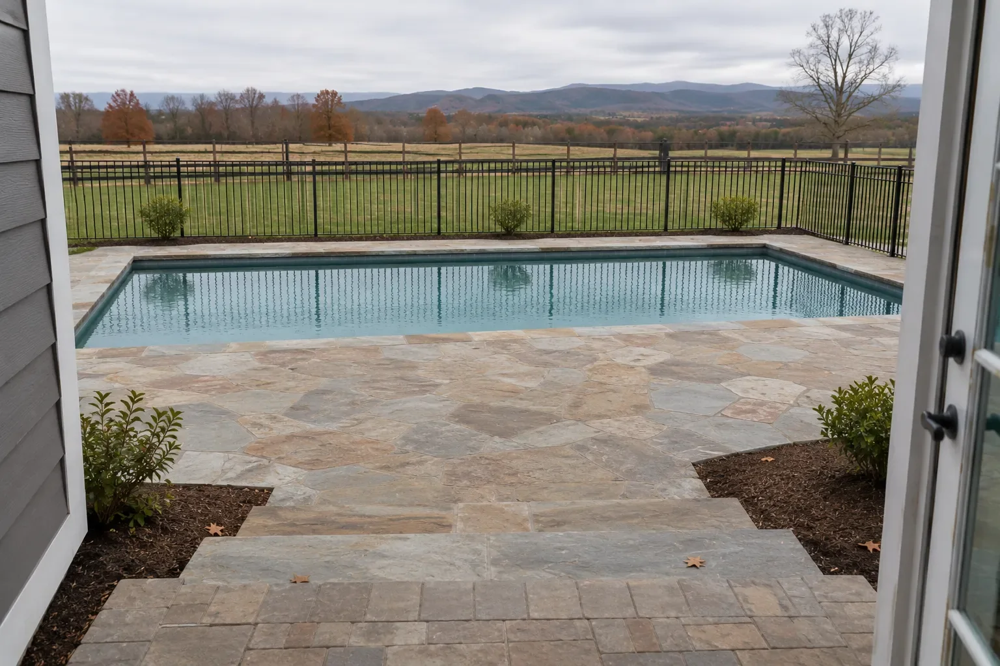
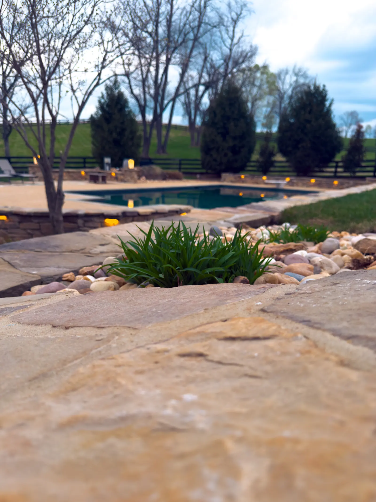
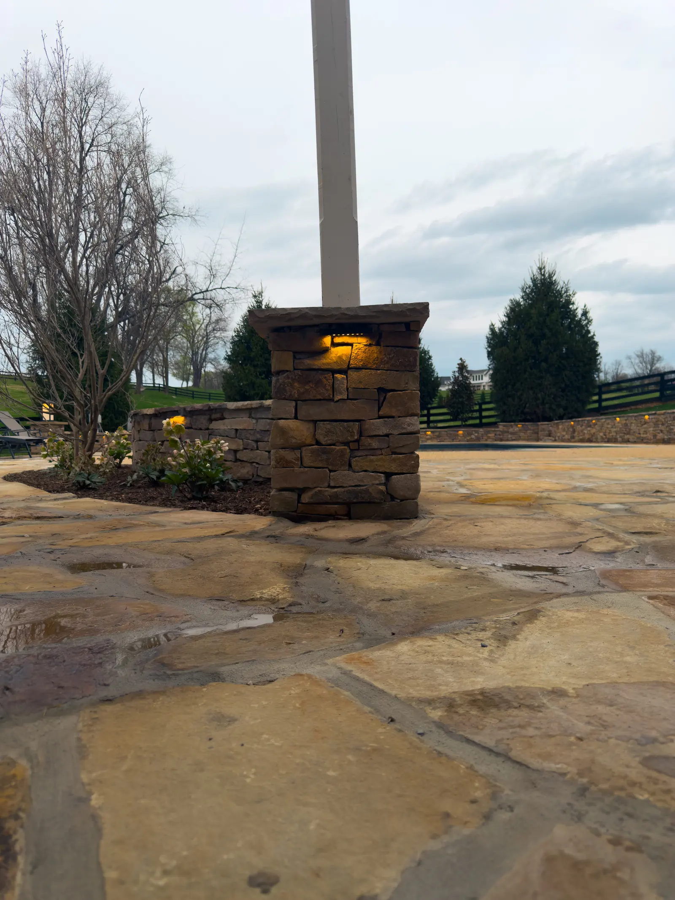
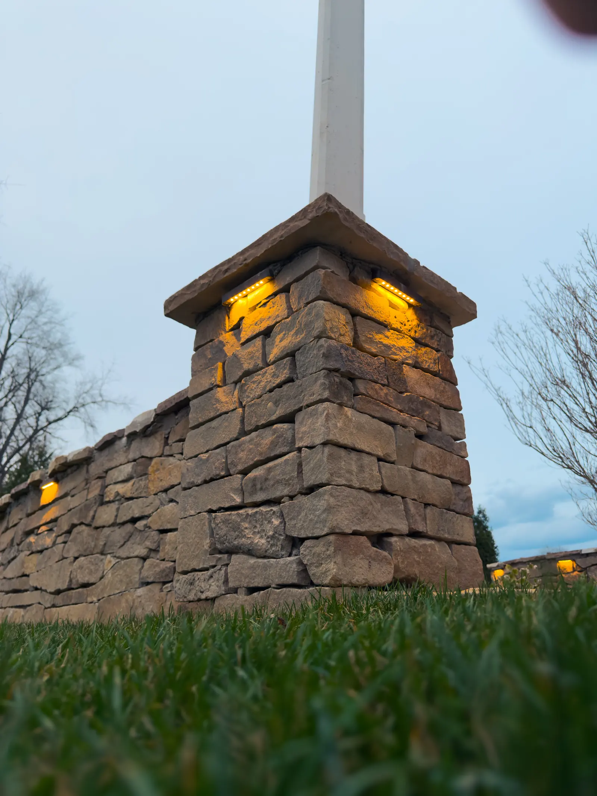

Pool Projects in Winchester, VA
We design and build the outdoor spaces around your pool, from flagstone and paver decks to stone walls, lighting and seating areas.
- 01Pool decks
- 02Flagstone
- 03Pavers
- 04Stone walls
- 05Lighting
Winchester, VA’s Pool Deck and Outdoor Living Specialists
Custom Pool Projects in Winchester VA
A pool is only as good as the space around it: the deck you walk on, the walls that frame it and the places where family and friends gather.
Potros Construction plans and builds the surroundings that make a pool feel like part of your home, with careful attention to drainage, safe surfaces and materials that hold up to sun, water and Virginia winters.


01Pool decks
Pool Decks and Surrounds Built for Comfort and Safety
The surface around a pool takes constant wear from water, sun and foot traffic. We build pool decks and surrounds in natural flagstone, pavers and other durable materials, with a stable base and proper grading so water drains away from the pool and your home.
Every layout is planned around how you use the space, with room for lounging, dining and walking comfortably.
- Flagstone and paver pool decks
- Proper grading and drainage
- Surfaces chosen for comfort and durability


02Walls & seating
Stone Walls, Seating and Structure Around the Water
Stone walls frame the pool, support level areas on sloped yards and create built-in seating. Combined with columns and caps, they give the space structure and a finished, custom look.
We integrate steps, planters and seating walls into the design so everything feels like one cohesive outdoor room.
- Natural stone retaining and seating walls
- Columns, caps and steps
- Built-in seating and planters


03Lighting & living
Lighting, Fire Features and Outdoor Living
Evenings by the pool are the best part of the summer. We add lighting to walls, steps and columns, and can include fire pits, fireplaces and outdoor kitchens so the space works well after the sun goes down.
Our 3D virtual design lets you see the finished pool area before any work begins.
- Wall, column and step lighting
- Fire pits and fireplaces
- Outdoor kitchens and dining areas
Our work
Pool area projects
Pool decks, stone walls and outdoor living spaces from recent builds around Winchester.




Why it matters
Make Your Pool the Centerpiece of Your Outdoor Space
A well-designed pool area increases how much you use your yard and adds lasting value to your property. Potros Construction delivers careful planning, quality materials and detailed craftsmanship around your pool.
- Safe, durable surfacesMaterials and grading chosen for comfort underfoot and good drainage.
- Cohesive designDecks, walls, lighting and seating planned together.
- Lasting valueA finished pool area adds beauty, use and value to your home.
Our process
From first visit to finished space.
- 1
In-Person Estimate
We visit your home, discuss your project, and take measurements.
- 2
3D Virtual Design
See your project in a realistic 3D virtual tour before we start.
- 3
Build & Enjoy
Our team brings your approved design to life with quality craftsmanship.
What types of construction services does Potros Construction offer?
We handle hardscapes, patios, decks, porches, landscaping, outdoor fireplaces, and full outdoor living builds.
Do you provide free estimates for projects?
Yes, we offer free on site estimates where we review your goals, materials, and project details.
Are you licensed and insured for residential construction?
Yes, Potros Construction is fully licensed and insured for all work we perform in Virginia.
How long do most projects take to complete?
Project timelines vary based on design, materials, and site conditions, but we provide a clear schedule before work begins.
Can you help with design ideas and material selection?
Absolutely. We guide you through choosing styles, colors, and materials that fit your home and budget.
Do your projects come with any warranties or guarantees?
Yes, we offer workmanship warranties on all projects and use materials backed by manufacturer guarantees.
Reviews
What our clients say about us.
Service area
Our Satisfied Winchester, VA Area Clients Are Our Main Priority
- Winchester
- Front Royal
- Strasburg
- Berryville
- Stephens City
- Middletown
- Clear Brook
- Martinsburg, WV
- Charles Town, WV
- Ranson, WV
- Leesburg
- Ashburn
- Sterling
- South Riding
- Purcellville
- Middleburg
- Hamilton
- Lovettsville
- Manassas
Also servicing Loudoun County, Virginia.
More outdoor services


Pools in Winchester, VA